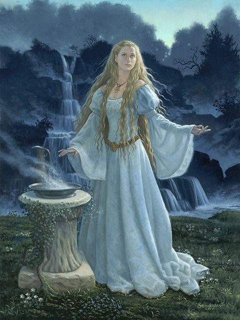
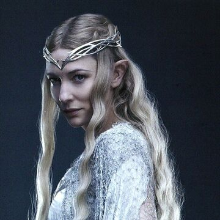

Galadriel
beleza, conhecimento e poderGaladriel é uma personagem criada por J.R.R. Tolkien, em seu legendárium da Terra Média. Ela aparece em O Senhor dos Anéis, O Silmarillion e Contos Inacabados. Galadriel era a co-dirigente e Senhora de Lothlórien juntamente com o seu marido, Lord Celeborn.
Era uma elfa pertencente à realeza, tanto dos Noldor como dos Teleri, sendo neta de ambos os reis Finwë e Olwë, sendo também parente próxima do rei Ingwë de Vanyar através de sua avó Indis. Ela foi uma dos líderes da rebelião dos Noldor e sua fuga de Valinor durante a Primeira Era.
Ela era a filha de Finarfin (príncipe de Ñoldor) e Eärwen. Seus irmãos eram Finrod Felagund, Angrod, e Aegnor. Galadriel era sobrinha de Fëanor, um dos mais importantes elfos da Primeira Era. Ela era um dos grandes elfos da Terra-Média, e supera quase todos os outros em beleza, conhecimento e poder. Ela também era portadora do anel Nenya, um dos Três Anéis Elficos.
Sua filha Celebrían era a esposa de Elrond e mãe de Arwen, Elladan e Elrohir. Tolkien descreve Galadriel como "a mais poderosa e mais bela de todos os elfos que permaneceram na Terra média " (após a morte de Gil-galad) [1] e "a maior das mulheres élficas".
"Mas descansa se precisas de descansar. No entanto, não percas toda a esperança. O amanhã é desconhecido. O conselho vem muitas vezes com o nascer do Sol."
Legolas Greenleaf
- Nascimento: Nascida no ano de 1362 da 1ª Era das Árvores
- Morte: Desconhecido
- Raça: Elfa
- Interpretado por: Cate Blanchett
De acordo com os registros mais antigos de sua história, esboçada por Tolkien em The Road Goes Ever On e utilizado em O Silmarillion, Galadriel foi uma participante ativa e líder da rebelião dos Noldor e sua fuga de Valinor: na verdade, a "única Elfa que se mostrou à altura naqueles dias". Ela, no entanto, há muito tempo havia se separado de Fëanor e seus filhos, e não participou no Fratricídio em Alqualondë. Em Beleriand vivia com seu irmão Finrod Felagund em Nargothrond e na corte de Thingol e Melian em Doriath. Nesse relato, ela conheceu Celeborn, parente de Thingol, em Doriath.
Após a Guerra da Ira, os valares proibiram os líderes dos Exilados de voltarem para as Terras Imortais, e assim sendo uma desses líderes, Galadriel permaneceu em exílio na Terra-média. No final da Terceira Era, quando ela recusa o Um Anel, é finalmente autorizada a regressar à Valinor.